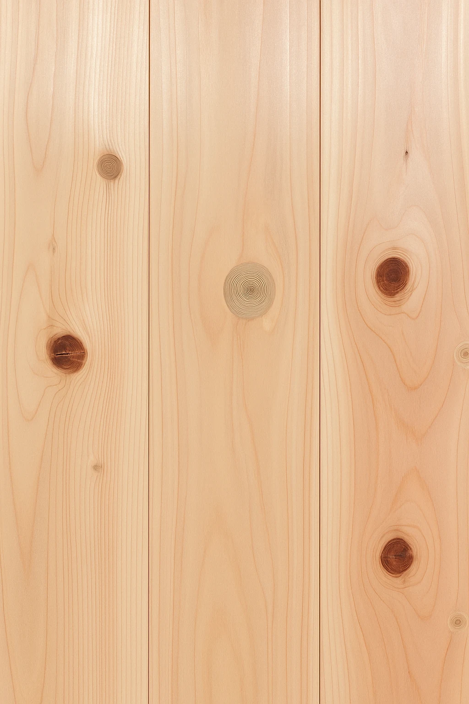
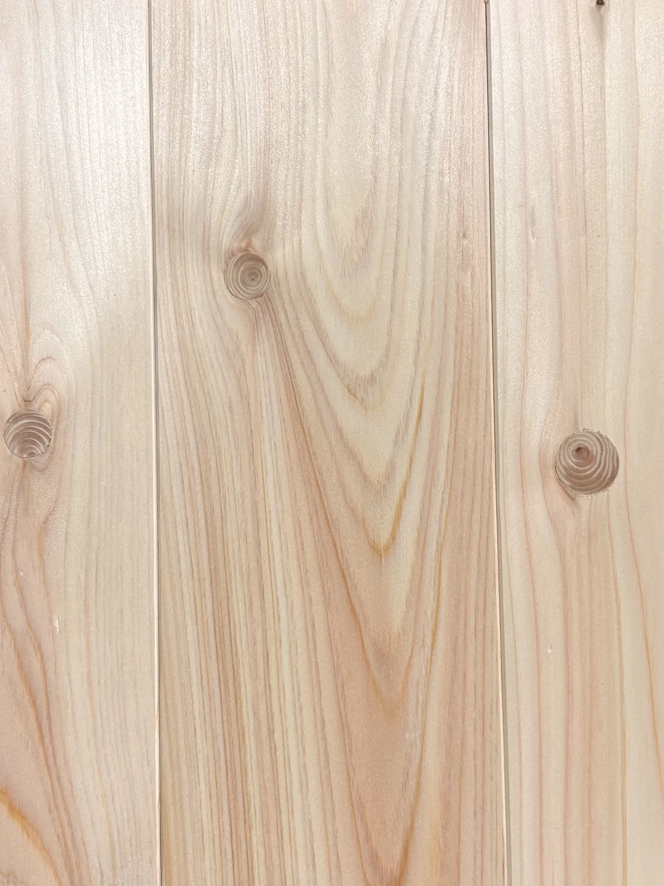
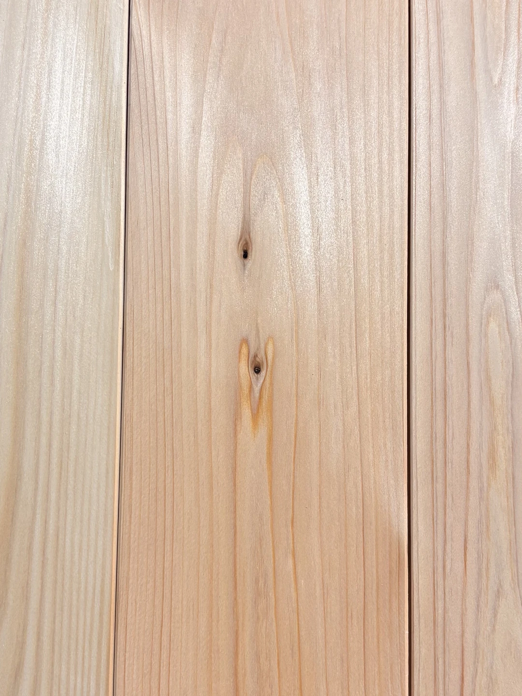
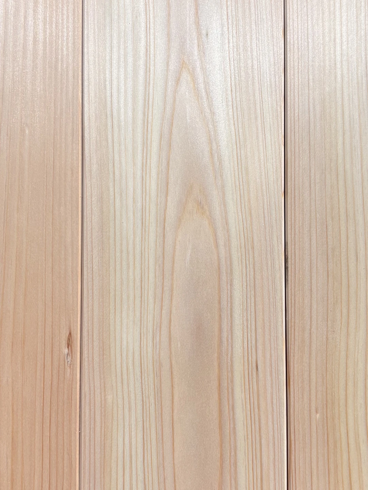

桧フローリングを選ぶとき、最も迷うのが「グレード（節の有無）」の違いではないでしょうか。 「節有と無節、何が違うの？」「予算が限られているけどどれを選べばいい？」 そんな疑問に、50年以上桧一筋でやってきた林材木店が徹底解説します。
そもそも「節（ふし）」とは何か？
木材の「節」とは、枝が幹に取り込まれた部分のことです。木が成長する過程で自然にできるものであり、 節のある木材が「劣っている」わけではありません。むしろ節は、木が生きてきた証とも言えます。
ここで最初に押さえてほしいのは、グレードの違いは「見た目と価格」の違いであって、性能の違いではないということです。 桧本来の香り・調湿性・抗菌性は、節有でも無節でもまったく同じ。 強度の面でも、生節や埋木処理された節が床材としての使用に支障をきたすことはなく、実用上の差はないと考えて差し支えありません。 「節有＝弱い・低品質」は誤解です。無節が高いのは品質が上だからではなく、節のない部分が丸太からわずかしか取れない希少品だからです。
4つのグレードを徹底比較
| グレード | 節の状態 | 価格帯 | おすすめ用途 |
|---|---|---|---|
| 節有 | 大小様々な生節と埋木が混在 | ★★★★★（最安） | 一般住宅の床全般・DIY |
| 小節 | 直径20mm以下の埋木のみ。 2m材は2個以下／3m・4m材は3個以下 |
★★★★☆ | 見た目も重視の床・リビング・寝室 |
| 特上小 | 埋木なし。小さな葉節が数か所のみ | ★★★☆☆ | こだわりのある空間・新築 |
| 無節 | 節が一切ない最上級グレード | ★★☆☆☆（最高級） | リビング・茶室・モデルルーム |
実物で見比べる4グレード
当店の桧フローリングを、節の量の違いがわかるように並べました（左から「節有 → 小節 → 特上小 → 無節」）。同じ桧でも、グレードによって表情がこれだけ変わります。いずれも超仕上げ・無塗装の実物です。




① 節有（ふしあり）— 自然素材らしい表情
大小さまざまな 生節（いきぶし） と 埋木（うめき） が混在するグレードです。「節があると欠陥品？」と思われがちですが、 むしろ自然素材らしい力強い表情が魅力。 一般住宅の床にも広く使われ、DIYや予算を抑えたいリフォームにも最適。経年とともに節も含めた全体が飴色に変わっていく様子が楽しめます。
・一般住宅の床にスタンダードな桧を使いたい方
・自然素材らしい素朴な見た目が好きな方
・桧本来の香り・調湿性を活かしたい方
・DIYで自分で張りたい方
② 小節（こぶし／「子節」とも書く）— 一番人気のバランス型
当店で最もご注文が多いのがこの「小節」です。検索などで「子節」と書かれることもありますが、どちらも同じ「こぶし」を指し、当店では「小節」と表記しています。直径20mm以下の埋木が一枚あたり、2m材なら2個以下、3m・4m材は3個以下に抑えた、すっきりとした見た目が特徴。一般住宅のリビングや寝室で最もよく使われます。
「節は気になるけど、無節は予算的にきつい」という方に特におすすめです。 バランスの良さから、工務店さまからの注文も最も多いグレードです。
③ 特上小（とくじょうこ）— こだわりの空間に
埋木は一切なく、小さな葉節が数か所残る程度の上質グレードです。 遠目には無節と見分けがつかないほどの整った木肌で、 新築の注文住宅や、リフォームでもリビングや玄関など「見せ場」となる空間によく使われます。
④ 無節（むぶし）— 最高グレード
節が一切なく、均一で美しい木肌が続きます。 和室・茶室・ホテルのロビーなど、最もこだわりたい空間に選ばれます。 価格は高めですが、その分圧倒的な美観と高級感があります。 「10年後も後悔しない素材を」という方に選ばれています。
・生節（いきぶし）：枝が成長の過程で幹に巻き込まれ、幹の組織としっかり結合した節。抜けたり穴になったりせず、構造的にも問題なし。
・死に節（しにぶし）・抜け節：枯れた枝が巻き込まれた節で、幹と結合しておらず、乾燥すると抜けて穴になることがあるもの。
・埋木（うめき）：死に節・抜け節の部分に穴を開け、同じ大きさの木のパーツをはめて補修した箇所。表面はフラットに仕上げられ、施工性に影響なし。
品質チェックのポイントは「死に節の処理」
同じ「節有」グレードでも、品質には差があります。見分けるポイントは死に節・抜け節がきちんと処理されているか。 死に節がそのまま残っていると、施工後に節が抜けて床に穴があくことがあります。 きちんとした製品は、死に節部分を機械でくり抜き、埋木やパテで補修してから出荷されます。 林材木店の節有グレードも、抜けの恐れがある節は埋木処理を行ったうえでお届けしています。 極端に安い節有材を見つけたら、「死に節の処理はされていますか？」と確認することをおすすめします。
グレード別の価格目安（当店実売価格より）
実際にどのくらいの価格差になるのか、当店の15mm厚・幅108mm・長さ1,820mm（1ケース20枚入＝約3.93㎡）のA級品で比較してみます。
| グレード | 1ケース（約3.93㎡） | ㎡単価の目安 |
|---|---|---|
| 節有 | 12,000円 | 約3,050円/㎡ |
| 小節 | 15,000円 | 約3,800円/㎡ |
| 特上小 | 18,000円 | 約4,600円/㎡ |
| 無節 | 27,000円 | 約6,900円/㎡ |
節有と無節では約2.2倍の差。性能は同じですから、この差は純粋に「見た目への投資」です。 逆に言えば、見た目を気にしない場所に無節を張るのはもったいない、ということでもあります。 ※価格は2026年6月時点の当店販売価格です。最新の価格は商品一覧でご確認ください。
なお、フローリングの価格は節のグレードだけでなく、長さの規格（UNI・OPC・乱尺）によっても大きく変わります。 規格の違いについてはUNI・OPC・乱尺とは？無垢フローリングの規格と価格差の理由で詳しく解説しています。
迷ったらどうする？選び方の3ステップ
- 場所を決める： リビング・寝室・廊下・子ども部屋など、どこに張るかで必要な品質が変わります
- 予算を決める： 同じ面積なら節有と無節で2〜3倍の価格差があることも
- サンプルで確認： 実物を見ないと判断できません。無料サンプルを活用してください
初めての方には「小節A級品」をおすすめしています。美観・価格・入手しやすさのバランスが最も良く、 「買って後悔した」という声が最も少ないグレードです。 まずはサンプルで実物をご確認ください。
よくある質問（グレード用語の意味）
Q. 「子節（小節）」とは？
A. 「こぶし」と読み、小さな埋木が数か所だけ残る、節を控えめに抑えたグレードです。「子節」と書かれることもありますが同じものを指します。節有と無節の中間にあたり、美観・価格・入手しやすさのバランスが最も良いため、当店で一番人気のグレードです。
Q. 「無節（むぶし）」とは？
A. 節が一切なく、均一で美しい木肌が続く最高グレードです。節のない部分は丸太からわずかしか取れない希少品のため価格は高めですが、和室・茶室・玄関など最もこだわりたい空間に選ばれます。香り・調湿などの性能は他グレードと同じで、差は「見た目」です。
Q. 「特上小（とくじょうこ）」とは？
A. 埋木は一切なく、小さな葉節が数か所残る程度の上質グレードです。遠目には無節と見分けがつかないほど整っており、無節より手頃な価格で「見せ場」の空間に使えるのが魅力です。
Q. 「節有（ふしあり）」とは？
A. 節をそのまま活かした、自然素材らしい表情が魅力の最も手頃なグレードです。当店では抜けの恐れがある死に節は埋木処理をしてお届けします。価格を抑えたい場所や、木の表情を楽しみたい方に向いています。
Q. グレードが違うと桧の性能も変わりますか？
A. 変わりません。桧本来の香り・調湿性・抗菌性（α-カジノール等）は、節有でも無節でも同じです。グレードの差は見た目と希少性によるもので、機能の差ではありません。
まとめ
桧フローリングのグレードは、美観と価格のトレードオフです。 どのグレードを選んでも桧本来の性能（香り・調湿・抗菌）は変わりません。 「どこに張るか」「予算はどのくらいか」「どんな見た目が好きか」で選べば失敗しません。
迷ったら、まず無料サンプルをお取り寄せください。実物を手に取れば、きっとすぐに決まります。